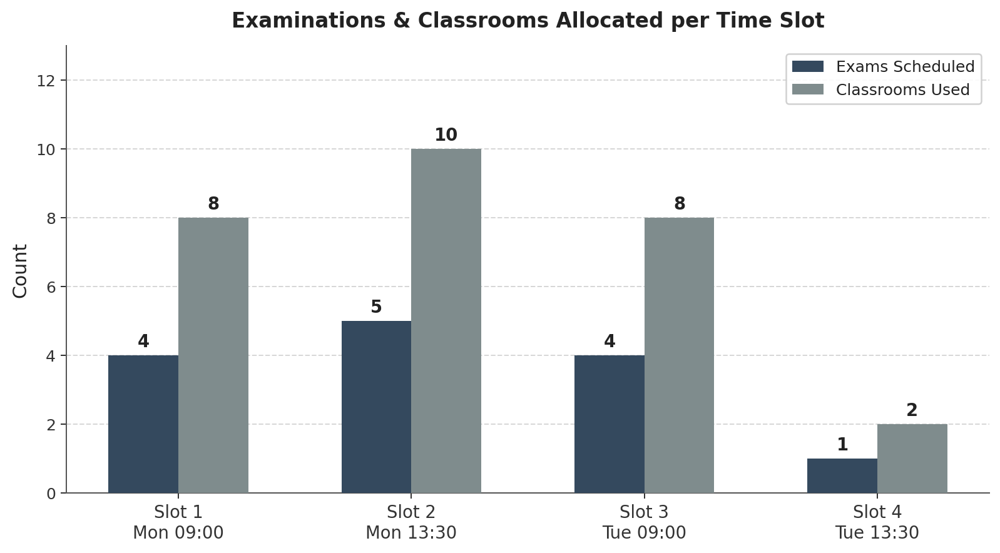
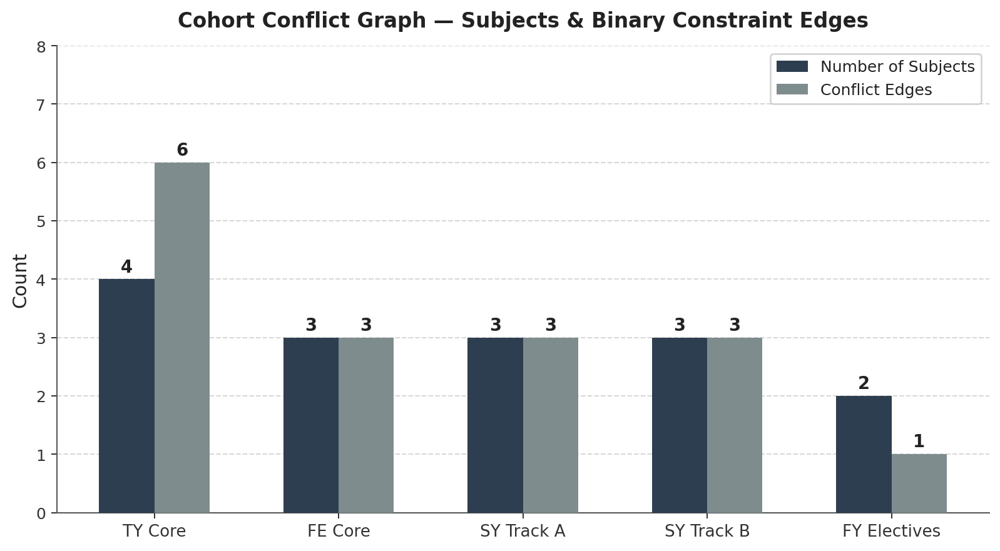

Program Execution Output
Initializing PCCOE SmartExam CSP Environment...
======================================================================================
PCCOE SMARTEXAM: CSP EXAMINATION TIMETABLE SCHEDULER
Department of Information Technology | Pimpri Chinchwad College of Engineering
======================================================================================
Total Examinations Scheduled : 14
Total Available Rooms : 10
Total Available Time Slots : 4
CSP Search Algorithm : Backtracking Search + MRV Variable Ordering + LCV
--------------------------------------------------------------------------------------
SOLVER EXECUTION METRICS:
>> Search Status : SUCCESS
>> Decision Nodes Explored : 14
>> Backtrack Operations : 0
>> Domain Pruning Events : 88
>> Execution Runtime : 0.0028 seconds
--------------------------------------------------------------------------------------
GENERATED TIMETABLE ASSIGNMENTS:
Day Time Slot Code Students Assigned Rooms Course Name
--------------------------------------------------------------------------------------
Monday 09:00–12:00 AIML 60 5-301, 6-101 Artificial Intelligence & ML
Monday 09:00–12:00 FE-MATH 60 6-201, 6-301 Engineering Mathematics
Monday 09:00–12:00 OOP 60 5-101, 5-201 Object-Oriented Programming
Monday 09:00–12:00 SEC 60 9-101, 9-201 Cybersecurity Fundamentals
Monday 13:30–16:30 DAA 60 6-201, 6-301 Design & Analysis of Algorithms
Monday 13:30–16:30 DBMS 60 5-301, 6-101 Database Management System
Monday 13:30–16:30 DS 60 5-101, 5-201 Data Structures
Monday 13:30–16:30 FE-PHY 60 9-101, 9-201 Engineering Physics
Monday 13:30–16:30 PE 60 9-301, 9-401 IT Programme Elective
Tuesday 09:00–12:00 CN 60 5-301, 6-101 Computer Networks Technology
Tuesday 09:00–12:00 COA 60 5-101, 5-201 Computer Organization & Arch.
Tuesday 09:00–12:00 FE-PROG 60 9-101, 9-201 Programming Fundamentals
Tuesday 09:00–12:00 OS 60 6-201, 6-301 Operating Systems
Tuesday 13:30–16:30 AUT 60 5-101, 5-201 Automata Theory
--------------------------------------------------------------------------------------
TIMETABLE RIGOROUS VERIFICATION:
>> Validation : PASSED
>> Status : ZERO student conflicts | ZERO room double-bookings | 100% capacity met.
======================================================================================
Output Visualisations
The following charts were generated from the CSP solver output to illustrate slot utilisation, search space complexity, cohort conflict structure, and backtracking reduction across algorithm variants.

Figure 1: Examinations & classrooms allocated per time slot across the schedule.

Figure 2: Subjects and binary conflict edges per student cohort.
Generative AI Usage Declaration
Interaction Summary
The AI was used strictly as a conceptual reference and clarification tool. All code was written, structured, and debugged independently. The solver architecture, dataclass design, heuristic implementations, and validation engine were designed by myself with AI assistance limited to understanding the underlying theory.